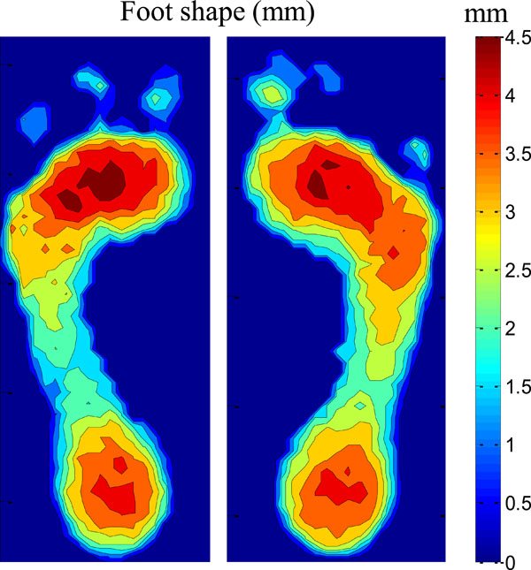

Estimating Foot Pressure from Human Pose

A camera can show where an athlete's joints are. It cannot show how hard the feet press into the ground, and that pressure says a lot about balance. This tutorial explains a line of research from Penn State that predicts a foot-pressure map from a single video frame of a person's body pose [1][2].
What you will learn
You will see how software finds a skeleton in video, why forces and pressure count as a different kind of information than position, how a neural network called PressNET links the two, and where the approach works and where it does not.
How to use this site
Read the pages in order, about 20 minutes in total. Each page has narration at the top. Numbers in brackets link to the annotated bibliography.
Start with pose estimation.